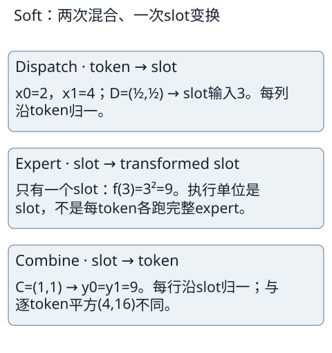

图4 / Fig. 4. 软槽混合。作者自制解释图，依据Puigcerver等v2 Algorithm 1及Figure 1（物理 p.2）的机制，不是原图重绘。
作者自制解释图与自主排版数值表。用 Tab 选择按钮，Enter 或 Space 缩放；横向区域可聚焦并用方向键滚动。 关闭 JavaScript 时可直接滚动原尺寸图像。缩放仅改变查看尺寸，不改写图中文字；原始机制和数值来源见正文图注。
Return to article · Source / full-resolution asset
